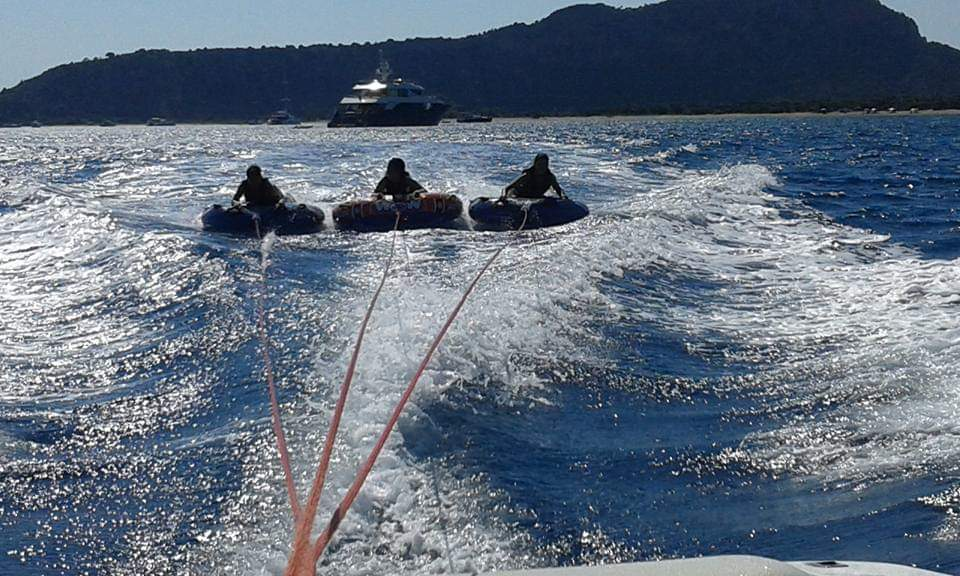

Λαλάρια
Πρόκειται για μία παραλία με μεγάλα βότσαλα, εξού και το όνομά της, Λαλάρια. Πολλά εκδρομικά σκάφη επισκέπτονται την παραλία για να δουν και να κάνουν μπάνιο σε αυτή τη θαυμάσια παραλία μοναδικής ομορφιάς. Στα Λαλάρια θα φτάσετε με καραβάκι.
Ένα νησί, ατελείωτη διασκέδαση
Πρόκειται για μία παραλία με μεγάλα βότσαλα, εξού και το όνομά της, Λαλάρια. Πολλά εκδρομικά σκάφη επισκέπτονται την παραλία για να δουν και να κάνουν μπάνιο σε αυτή τη θαυμάσια παραλία μοναδικής ομορφιάς. Στα Λαλάρια θα φτάσετε με καραβάκι.

Το σπίτι βρίσκεται σε μια πλατεία στο κέντρο της μικρής πόλης της Σκιάθου, λίγα μέτρα από το λιμάνι. Ένα λιτό, παραδοσιακό σκιαθίτικο σπίτι, που δίνει την εντύπωση ότι ξεπηδά από τα διηγήματά του. Τα λιγοστά αντικείμενα προσωπικής χρήσης του συγγραφέα συμπληρώνουν την απλή επίπλωση του σπιτιού και αποτελούν τη μόνη υλική περιουσία που άφησε πίσω του.
Τα αεροσκάφη που προσγειώνονται από την αντίθετη κατεύθυνση περνούν από τα ανατολικά της Σκιάθου, ακριβώς πάνω από έναν παραλιακό δρόμο, έξω από το όριο του αερολιμένα. Γι' αυτό ο χώρος προσελκύει πολλούς φωτογράφους αεροσκαφών. Είναι ένα μοναδικό θέαμα, που πολλοί επισκέπτες έρχονται να δουν ξανά και ξανά κατά τη διάρκεια των διακοπών τους!

Πολλές παραλίες του νησιού σας δίνουν τη δυνατότητα να δοκιμάσετε κάθε είδους θαλάσσιο σπορ, από ιστιοπλοΐα έως αλεξίπτωτο, windsurf, banana, καγιάκ κ.ά. Υπάρχουν φυσικά και μαθήματα για όσους θέλουν να αποκτήσουν μία ικανότητα παραπάνω!